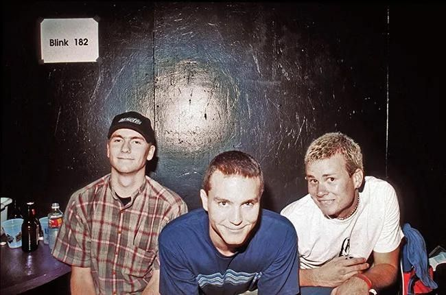
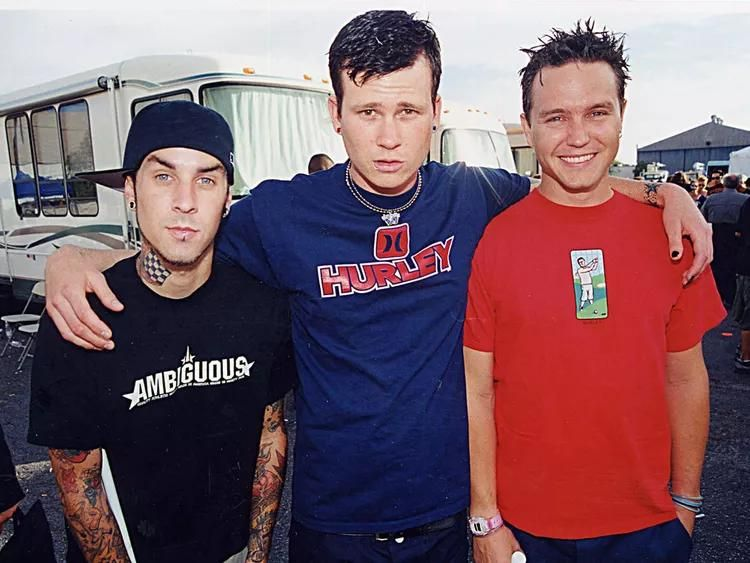
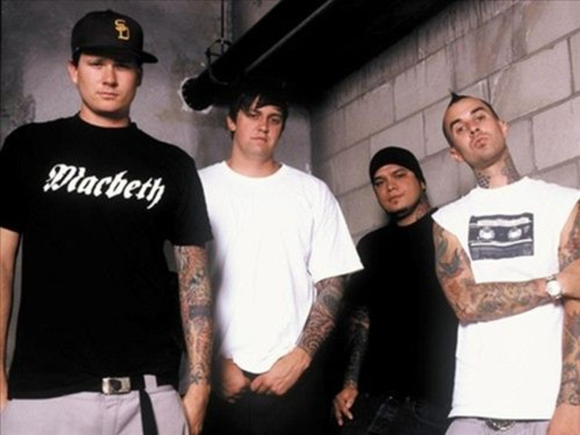
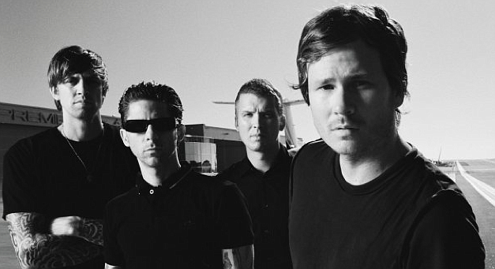
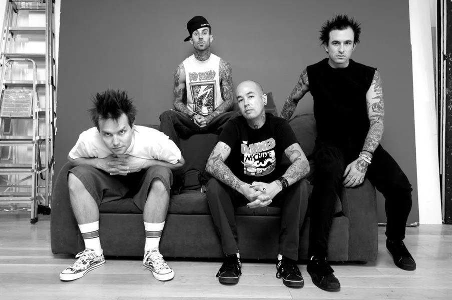
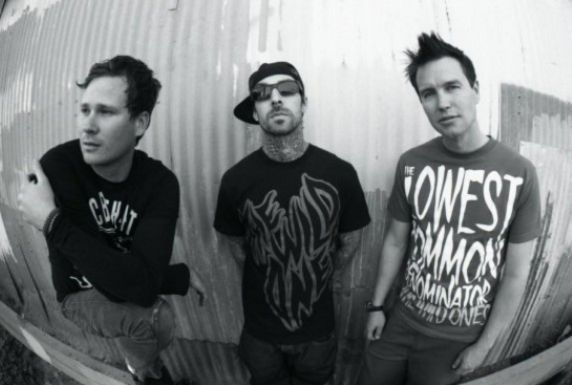
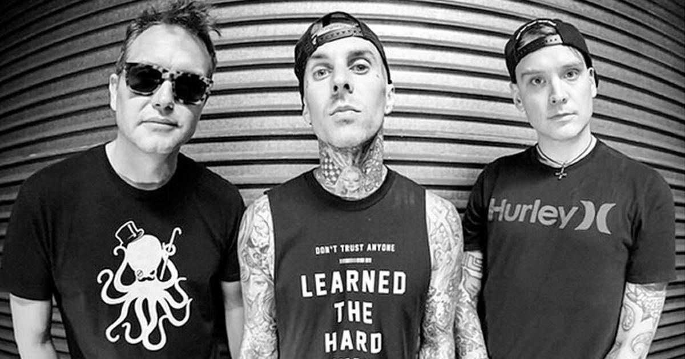
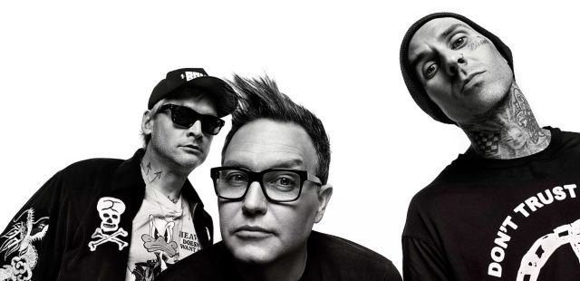
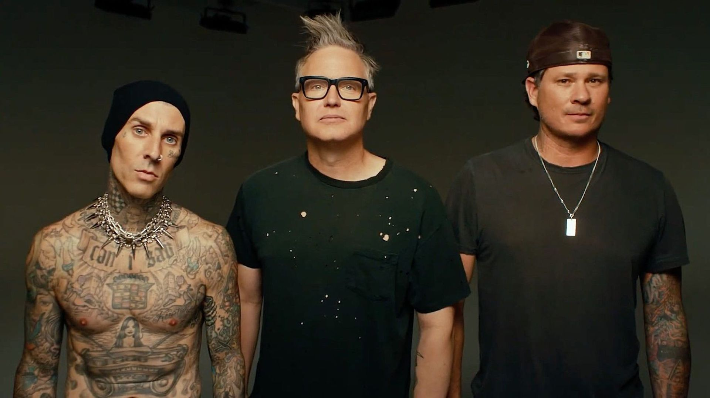

Après avoir été renvoyé de son école secondaire, Poway High School, pour avoir été surpris ivre lors d'une partie de basket-ball,
Tom DeLonge commence à se consacrer au punk (après avoir découvert The Descendents lors d'un séjour en camping) et à se passionner
pour le skateboard. Il est alors placé dans une autre école où il fait la connaissance d'une certaine Anne Hoppus, petite amie d'un
de ses proches, qui présente ce dernier à son frère Mark Hoppus, se disant qu'ils pourraient former un groupe ensemble.
Rapidement,
ils écrivent leur première chanson : Carousel. Ce morceau est globalement composé moins d'une heure après leur rencontre : Mark Hoppus
montre à DeLonge une ligne de basse sur laquelle il travaillait, et Delonge lui montre un riff que lui-même travaillait. Ils se rendent
compte que leur travail s'accorde bien, et le morceau naît rapidement. Tom DeLonge fait alors appel à un ami, âgé de 14 ans, Scott Raynor
pour devenir le batteur du groupe.
Le groupe enfin complet peut commencer à enchaîner les répétitions et à créer les premières chansons de
leur répertoire. Le groupe va tout d'abord s'appeler Duck Tape et prendre un canard pour mascotte. Puis très vite le groupe abandonne son
nom et sa mascotte au profit d'un nom plus sérieux, Blink, et d'une autre mascotte, un lapin. En mai 1993, Blink sort sa première démo,
Flyswatter, enregistrée dans la chambre du batteur du groupe. Cette démo, mise en boîte avec un matériel simple impliquant un enregistrement
de mauvaise qualité, s'est vendue à une cinquantaine d'exemplaires, d'après Mark Hoppus. La même année, le groupe sort une deuxième démo
intitulée sobrement Demo #2, qui mêle nouvelles chansons et reprises de Flyswatter.
Après des débuts difficiles (pas de spectateurs,
bannissement des bars et des cafés), le groupe réussit tout de même à se produire dans quelques clubs de San Diego. Il décroche son premier
contrat avec le label Kung Fu Records et enregistre une troisième démo : Buddha, à la fin de cette même année 1993. Environ 1 500 copies de
cette démo sont produites par Filter Records. En 1995, le premier véritable album du groupe, Cheshire Cat, est commercialisé et devient
rapidement l'album révélation du groupe. Produit par Grilled Cheese Records, l'album contient d'anciennes chansons apparues dans les trois
premières démos du groupe. Cette même année, peu après la sortie de l'album, un groupe de pop irlandais également appelé Blink porte plainte,
et le nom est changé en Blink-182. D'après les rumeurs, 182 désigne le nombre de fois qu'Al Pacino prononce le mot Fuck (« putain ») dans le
film Scarface4. En 1996, à une période où le style punk-rock revient en vogue, Blink-182 signe avec le label MCA qui devient plus tard Geffen
Records.
Biographie
Formation et débuts (1992-1996)

Scott Raynor, Mark Hoppus et Tom DeLonge le 8 octobre 1996 dans leur vestiaire au "Whisky A Go Go" à Los Angeles
Premiers succès et célébrité (1996-2002)

Travis Barker, Tom DeLonge et Mark Hoppus en 1999
Après un déménagement à Encinitas, toujours en Californie, Blink-182 enregistre en 1997 un deuxième album, Dude Ranch, produit par Mark Trombino.
L'album, et en particulier les singles Josie et Dammit (Growing Up), remporte un grand succès commercial. Le groupe connaît l'année suivante ses
premières difficultés. Scott Raynor, pour qui le groupe n'est qu'un divertissement passager, rencontre de sérieux problèmes d'alcoolisme et est
contraint de s'éloigner pour entrer dans un centre de désintoxication. D'après d'autres sources, Scott Raynor abandonne simplement le groupe pour
se concentrer sur ses études. Son départ, qui intervient pendant une tournée aux États-Unis, pousse Mark Hoppus et Tom Delonge à engager
rapidement Travis Barker (issu du groupe The Aquabats) en remplacement pour la tournée. Malgré le souhait de Scott Raynor de revenir au sein
du groupe, les deux leaders décident de conserver définitivement Travis Barker comme batteur du groupe.
En 1999, Enema of the State, leur troisième album, produit par Jerry Finn, remporte un tel succès qu'il propulse le groupe aux sommets des charts américains. Le groupe devient même très populaire dans l'industrie de la pop en général. L'album doit principalement son succès commercial aux chansons What's My Age Again?, Adam's Song et All the Small Things. Enema of the State se vend à près de 16 millions de copies à travers le monde (dont 300 000 en France). Musicalement, ce troisième album est construit sur des mélodies classiques des groupes de cette époque (NOFX, Green Day, The Offspring…) en ayant toutefois pris soin de clarifier les sons et de simplifier les distorsions. Ce choix musical permet d'ouvrir le groupe à un plus large public mais est par la même occasion la source de nombreuses critiques de certains fans.
L'année suivante, en 2000, sort leur premier et unique album live The Mark, Tom, and Travis Show (The Enema Strikes Back!). L'album contient les principaux succès des trois albums Cheshire Cat, Dude Ranch et Enema of the State ainsi qu'une chanson inédite enregistrée en studio : Man Overboard. L'album, tiré en édition limitée, est, depuis, devenu un collector particulièrement recherché. Pour parachever l'énorme succès de sa compilation, le trio californien participe à The Honda Civic Tour en 2001. Le 12 juin 2001 paraît Take Off Your Pants and Jacket qui s'installe dans la continuité musicale et commerciale du groupe et se vend à plus de 8 millions d'exemplaires. Les premiers albums sont sortis en différentes versions incluant des bonus différents sur chaque version. Ces chansons, Fuck a Dog, Mother's Day et When You Fucked Grandpa sont considérées comme des chansons humoristiques sans grande valeur musicale. L'album contient toutefois des chansons plus sérieuses à l'instar de Time to Break Up, Don't Tell Me That It's Over et What Went Wrong. Pour la sortie de cet album, une tournée européenne est organisée à l'hiver 2001 mais finalement annulée à la suite des attentats du 11 septembre 2001. Repoussée en 2002, la tournée est finalement abandonnée quand surviennent des problèmes de dos pour Tom DeLonge.
En 1999, Enema of the State, leur troisième album, produit par Jerry Finn, remporte un tel succès qu'il propulse le groupe aux sommets des charts américains. Le groupe devient même très populaire dans l'industrie de la pop en général. L'album doit principalement son succès commercial aux chansons What's My Age Again?, Adam's Song et All the Small Things. Enema of the State se vend à près de 16 millions de copies à travers le monde (dont 300 000 en France). Musicalement, ce troisième album est construit sur des mélodies classiques des groupes de cette époque (NOFX, Green Day, The Offspring…) en ayant toutefois pris soin de clarifier les sons et de simplifier les distorsions. Ce choix musical permet d'ouvrir le groupe à un plus large public mais est par la même occasion la source de nombreuses critiques de certains fans.
L'année suivante, en 2000, sort leur premier et unique album live The Mark, Tom, and Travis Show (The Enema Strikes Back!). L'album contient les principaux succès des trois albums Cheshire Cat, Dude Ranch et Enema of the State ainsi qu'une chanson inédite enregistrée en studio : Man Overboard. L'album, tiré en édition limitée, est, depuis, devenu un collector particulièrement recherché. Pour parachever l'énorme succès de sa compilation, le trio californien participe à The Honda Civic Tour en 2001. Le 12 juin 2001 paraît Take Off Your Pants and Jacket qui s'installe dans la continuité musicale et commerciale du groupe et se vend à plus de 8 millions d'exemplaires. Les premiers albums sont sortis en différentes versions incluant des bonus différents sur chaque version. Ces chansons, Fuck a Dog, Mother's Day et When You Fucked Grandpa sont considérées comme des chansons humoristiques sans grande valeur musicale. L'album contient toutefois des chansons plus sérieuses à l'instar de Time to Break Up, Don't Tell Me That It's Over et What Went Wrong. Pour la sortie de cet album, une tournée européenne est organisée à l'hiver 2001 mais finalement annulée à la suite des attentats du 11 septembre 2001. Repoussée en 2002, la tournée est finalement abandonnée quand surviennent des problèmes de dos pour Tom DeLonge.
Projets parallèles et retrouvailles (2002-2005)

Le groupe Box Car Racer avec Tom DeLonge et Travis Barker
L'été 2002, Blink-182 et Green Day organisent conjointement le Pop Disaster Tour avec la participation de Jimmy Eat World, Saves The Day et
Kut U Up. Durant cette tournée, à cause de ses douleurs récurrentes au dos, Tom DeLonge commence ses premières réalisations en solo. Poussé
par des réalisations finalement intéressantes et nombreuses, il s'associe à Barker, à la batterie, et à un ancien ami, David Kennedy à la
guitare, pour former le projet Box Car Racer. Ce n'est qu'après la sortie de l'album qu'ils se décident à engager un bassiste ; c'est Anthony
Celestino qui est choisi. Le nom du projet provient du bombardier Bockscar, responsable du largage de la seconde bombe atomique à Nagasaki à
la fin de la Seconde Guerre mondiale. Les deux singles extraits de l'album qui porte le nom du groupe sont I Feel So et There Is.
L'enregistrement inclut également des invités comme Tim Armstrong (Rancid, Operation Ivy, Transplants), Jordan Pundik (New Found Glory) dans
Cat Like Thief et Mark Hoppus dans Elevator.
La réalisation de ce projet est, selon Tom DeLonge, la raison principale de la séparation de Blink-182 en 2005. Peu après Box Car Racer, Barker est invité à participer à un autre projet connu sous le nom de Transplants. Le groupe sort trois albums : Transplants en 2002, Haunted Cities en 2005, et In a War Zone en 2013. Après un an de repos, un album plus mature et réfléchi voit le jour le 18 novembre 2003. Conçu comme une méditation intérieure du déclin romantique, l'album inclut quatre succès : Feeling This, I Miss You, Down et Always. Selon Travis Barker, ne pas nommer l'album est un moyen d'y symboliser le renouveau du groupe.
Les critiques fustigent un son trop emprunté aux groupes The Police ou U2, et ce malgré d'incessantes mises au point des membres du groupe qui y voient une influence plus forte du groupe The Cure, argument soutenu par l'apparition de Robert Smith dans le titre All of This. Néanmoins, les puristes du groupe peuvent y retrouver des sonorités plus habituelles à l'instar des titres Go ou Feeling This. Vers la fin 2003, le groupe s'embarque pour la tournée Dollar Bill qui connait un grand succès notamment en raison des prix bas des places pour les concerts (1 $). Trois ans après sa sortie, l'album s'est vendu à près de 10 millions d'exemplaires à travers le monde.
La réalisation de ce projet est, selon Tom DeLonge, la raison principale de la séparation de Blink-182 en 2005. Peu après Box Car Racer, Barker est invité à participer à un autre projet connu sous le nom de Transplants. Le groupe sort trois albums : Transplants en 2002, Haunted Cities en 2005, et In a War Zone en 2013. Après un an de repos, un album plus mature et réfléchi voit le jour le 18 novembre 2003. Conçu comme une méditation intérieure du déclin romantique, l'album inclut quatre succès : Feeling This, I Miss You, Down et Always. Selon Travis Barker, ne pas nommer l'album est un moyen d'y symboliser le renouveau du groupe.
Les critiques fustigent un son trop emprunté aux groupes The Police ou U2, et ce malgré d'incessantes mises au point des membres du groupe qui y voient une influence plus forte du groupe The Cure, argument soutenu par l'apparition de Robert Smith dans le titre All of This. Néanmoins, les puristes du groupe peuvent y retrouver des sonorités plus habituelles à l'instar des titres Go ou Feeling This. Vers la fin 2003, le groupe s'embarque pour la tournée Dollar Bill qui connait un grand succès notamment en raison des prix bas des places pour les concerts (1 $). Trois ans après sa sortie, l'album s'est vendu à près de 10 millions d'exemplaires à travers le monde.
Séparation (2005-2009)

Tom DeLonge et son groupe Angels and Airwaves
C'est durant cette dernière tournée, et malgré cet album de la réconciliation, que la séparation du groupe devient de plus en plus évidente,
la tension devenant trop pesante et les rancœurs entre Tom et Mark trop fortes. En outre, Tom commence à se lasser des tournées et souhaite
se rapprocher de sa famille. La tension est telle que le dernier concert, organisé en hommage aux victimes du tremblement de terre de 2004 en
Indonésie, est définitivement annulé. Après quelques tentatives de concerts et de tournées avortées en Californie sans Tom DeLonge, la séparation
devient effective et officielle le 22 février 2005. Mis à part Travis Barker, les membres du groupe sont, jusqu'en septembre de la même année,
relativement discrets en commentaires et explications vis-à-vis de cette séparation. C'est ainsi que, pendant une longue période, il n'existe
aucune raison officielle de leur séparation, tandis que les rumeurs de tension entre Mark et Tom sont sans cesse réfutées par le second.
Cependant, dans une interview de Mark Hoppus donnée au site internet B182.com en septembre 2006, celui-ci met une nouvelle fois en cause
Tom DeLonge et son mutisme nécessitant l'intervention de son manager pour expliquer la situation aux autres membres du groupe. Dans cette même
interview, Mark va plus loin en déplorant la qualité du premier album de Angels and Airwaves, le nouveau groupe de Tom DeLonge, qu'il juge lent,
répétitif et déjà-vu et affirmant que « Tom veut montrer qu'il est un artiste » et que « Tom sait mieux parler de bonne musique qu'en faire. »

Mark Hoppus, Travis Barker et leur groupe "+44"
À la suite de cette séparation, Geffen Records sort en octobre 2005 un album regroupant les meilleurs titres du groupe ainsi que quelques
anciennes chansons qui n'avaient pas été éditées. L'album, Greatest Hits, atteint très vite les sommets des ventes aux États-Unis. Par la suite,
chaque membre du groupe travaille sur un projet distinct. Tom DeLonge est avec le groupe Angels and Airwaves qui sort son premier album
We Don't Need to Whisper le 23 mai 2006 et un second nommé I-Empire fin 2007. Travis Barker, quant à lui, travaille toujours avec Skinhead Rob
malgré l'arrêt du groupe Transplants. Leur dernière collaboration aboutit à un nouveau projet dénommé Expensive Taste, projet qui intègre le
rappeur Paul Wall. Travis Barker travaille également avec Avril Lavigne sur son dernier album The Best Damn Thing sorti en 2007. Mark Hoppus et
Travis Barker continuent également de leur côté à travailler sur +44, groupe créé durant la dernière tournée européenne (qui est également la
dernière tournée du groupe) et plus précisément en Angleterre (+44 étant l'indice téléphonique pour appeler vers l'Angleterre quand on est à
l'étranger), et qui sort son premier album When Your Heart Stops Beating le 14 novembre 2006.
Jerry Finn, considéré comme le plus grand producteur punk-rock des années 1990, et connu pour avoir travaillé avec des groupes comme Green Day, The Offspring et Sum 41, décède d'une attaque cérébrale le 9 août 2008 à l'âge de 39 ans. Mark, Travis et Tom sont très affectés par sa mort car, bien que producteur, il était avant tout un grand ami. Le vendredi 19 septembre 2008, Travis Barker est grièvement blessé lors du crash d'un avion privé en Caroline du Sud. Brulé au troisième degré sur une majeure partie du corps, il est admis en soins intensifs dans un service pour grands brûlés ; il en ressort le 29 septembre et entre par la suite dans un hôpital de Los Angeles. Quatre personnes, dont deux membres de l'équipage, sont tuées dans cet accident.
Jerry Finn, considéré comme le plus grand producteur punk-rock des années 1990, et connu pour avoir travaillé avec des groupes comme Green Day, The Offspring et Sum 41, décède d'une attaque cérébrale le 9 août 2008 à l'âge de 39 ans. Mark, Travis et Tom sont très affectés par sa mort car, bien que producteur, il était avant tout un grand ami. Le vendredi 19 septembre 2008, Travis Barker est grièvement blessé lors du crash d'un avion privé en Caroline du Sud. Brulé au troisième degré sur une majeure partie du corps, il est admis en soins intensifs dans un service pour grands brûlés ; il en ressort le 29 septembre et entre par la suite dans un hôpital de Los Angeles. Quatre personnes, dont deux membres de l'équipage, sont tuées dans cet accident.
Réunion et Neighborhoods (2009-2013)

Blink-182 en 2009 à l'annonce de leur réunion
Les trois membres du groupe se réunissent le 8 février 2009 lors de la 51e édition des Grammy Awards afin de décerner un prix.
Lors du discours précédant la remise, le trio annonce la reformation de Blink-182 : « We used to play music together, and we decided
we're going to play music together again. Blink-182 is back! ». Le 9 juin 2009, le groupe se produit en live dans le Jimmy Kimmel Show.
Les morceaux Dammit, Josie, What's My Age Again ?, Reckless Abandon, Don't Leave Me ainsi que Down, Feeling This et Dumpweed sont joués.
Le groupe semble redevenu comme il l'était à ses débuts : de l'humour et du décalé. Ils jouent aussi, au Daily Habbit, la chanson The Rock Show.
À partir du 23 juillet et jusqu'en octobre, le groupe part en tournée au Canada et aux États-Unis pour une série de plus de quarante concerts
avec comme invités Weezer, Fall Out Boy, Panic! at the Disco et bien d'autres encore. La sortie d'une nouvelle chanson Up All Night est annoncée
sur de multiples sites internet, Blink-182 annonce même qu'il compte la jouer lors de la tournée américaine et canadienne à l'été 2009 mais
l'idée est abandonnée, le groupe préférant que la chanson sorte des studios avant de la jouer en public. Concernant le nouvel album, Mark le
confirme dans une interview, les concerts ainsi que chaque projet des membres du groupe ne facilitent pas l'avancée de l'album. Il rajoute que
le groupe travaille en studio et que l'album n'est pas une priorité à l'heure actuelle. Ce dernier reste attendu pour au minimum 2010 mais il
pourrait sortir à n'importe quel moment de cette nouvelle décennie, toujours d'après ses dires. Le groupe part pour une tournée européenne lors
de l'été 2010, passant par le festival parisien Rock en Seine le 27 août, puis pour une nouvelle série de concerts aux États-Unis.
Début 2011, le groupe annonce une nouvelle tournée européenne qui débute mi-juin lors d'un festival en Allemagne. En février 2011, Travis Barker annonce sur une vidéo postée sur le net par un fan que l'album sortirait à la fin de l'année 2011 ou en 2012. Le même mois, dans une interview publiée par MTV, Travis confirme que la sortie de l'album est prévue pour l'été 2011, et précise que « tous les futurs morceaux présents dans cet album sont terminés et qu'ils ne changeront plus. » Dans une interview donnée au magazine Rocksound, Tom DeLonge annonce de son côté que « l'album sort clairement cet été environ au même moment que la tournée britannique, et qu'il n'y aura pas de tournée si l'album n'est pas terminé. » Après quoi le groupe annonce sur son site officiel que la tournée européenne prévue pour l'été 2011 est reportée à l'été suivant et que l'album devrait sortir avant la fin de l'année 2011. Le 14 juillet 2011, Blink-182 dévoile enfin le titre Up All Night sur son site internet. Quelques jours plus tard, Mark Hoppus annonce que le prochain album a pour nom Neighborhoods et que sa sortie est prévue pour le 27 septembre 2011, la veille en Europe. L'album est disponible en version classique et en version deluxe (trois chansons inédites en plus). Le 4 août, Blink-182 dévoile un second nouveau titre Heart's All Gone. Le 26 août, le clip de Up All Night est diffusé pour la première fois sur le site officiel du groupe. Le 6 septembre, la chanson After Midnight est mise en ligne par le groupe californien. En octobre 2012, le groupe annonce avoir quitté la maison de disques Interscope Records et par la même occasion devenir un groupe indépendant. Blink-182 sort le 18 décembre 2012 un maxi intitulé Dogs Eating Dogs, enregistré dans un studio de Los Angeles et vendu en trois packs sur leur site officiel, le premier single étant Boxing Day.
Début 2011, le groupe annonce une nouvelle tournée européenne qui débute mi-juin lors d'un festival en Allemagne. En février 2011, Travis Barker annonce sur une vidéo postée sur le net par un fan que l'album sortirait à la fin de l'année 2011 ou en 2012. Le même mois, dans une interview publiée par MTV, Travis confirme que la sortie de l'album est prévue pour l'été 2011, et précise que « tous les futurs morceaux présents dans cet album sont terminés et qu'ils ne changeront plus. » Dans une interview donnée au magazine Rocksound, Tom DeLonge annonce de son côté que « l'album sort clairement cet été environ au même moment que la tournée britannique, et qu'il n'y aura pas de tournée si l'album n'est pas terminé. » Après quoi le groupe annonce sur son site officiel que la tournée européenne prévue pour l'été 2011 est reportée à l'été suivant et que l'album devrait sortir avant la fin de l'année 2011. Le 14 juillet 2011, Blink-182 dévoile enfin le titre Up All Night sur son site internet. Quelques jours plus tard, Mark Hoppus annonce que le prochain album a pour nom Neighborhoods et que sa sortie est prévue pour le 27 septembre 2011, la veille en Europe. L'album est disponible en version classique et en version deluxe (trois chansons inédites en plus). Le 4 août, Blink-182 dévoile un second nouveau titre Heart's All Gone. Le 26 août, le clip de Up All Night est diffusé pour la première fois sur le site officiel du groupe. Le 6 septembre, la chanson After Midnight est mise en ligne par le groupe californien. En octobre 2012, le groupe annonce avoir quitté la maison de disques Interscope Records et par la même occasion devenir un groupe indépendant. Blink-182 sort le 18 décembre 2012 un maxi intitulé Dogs Eating Dogs, enregistré dans un studio de Los Angeles et vendu en trois packs sur leur site officiel, le premier single étant Boxing Day.
Départ de DeLonge, arrivée de Skiba et California (2014-2017)

Blink-182 en 2016 avec Matt Skiba remplaçant Tom Delonge
Début décembre 2013, à la suite de l'annonce des têtes d'affiche pour les Reading and Leeds Festivals 2014 dont fait partie Blink-182,
Mark Hoppus déclare que le groupe s'y produira avec les chansons de l'album publié avant l'événement d'août. Le 14 juillet 2014,
Tom DeLonge annonce via les réseaux sociaux que les répétitions reprennent et qu'il y aura bien un nouvel album : « les répétitions
commencent aujourd'hui… Et oui, il y aura un nouvel album ». Il s'excuse pour l'attente, mais ne donne aucune information quant à la
date de sortie. Alors que le groupe semble enfin prêt à entrer en studio début janvier 2015 pour y enregistrer son septième album studio,
des rumeurs annoncent le départ de DeLonge à la fin du mois, Hoppus et Barker ayant reçu un courriel du manager de celui-ci le 30 décembre
expliquant qu'il n'assisterait pas à la session qui commence le 5 janvier.
À la suite du buzz créé par l'information, DeLonge tient à affirmer qu'il fait toujours partie de Blink-182 et qu'il était d'ailleurs au téléphone pour organiser leur participation au Musink Tattoo Convention and Music Festival 2015 lorsqu'il a appris la nouvelle. Les deux autres membres confient alors au Rolling Stone « qu'ils en ont assez de couvrir Tom » et qu'ils ont l'impression de « revivre la même situation que dix ans plus tôt ». Ils expliquent avoir trouvé un contrat avec un label, que Tom « les a planté » et confirment « qu'il n'a techniquement pas quitté le groupe », mais que « son comportement ingrat et irrespectueux » les pousse à l'exclure du groupe. Barker ajoute que DeLonge « ne veut pas enregistrer d'album, mais juste faire quelques spectacles avec Blink quand il a besoin d'argent ». DeLonge répond via une lettre ouverte sur sa page Facebook, dans laquelle il considère que le groupe « s'est saboté tout seul » avec Dogs Eating Dogs et que cela avait altéré leurs relations, « coupant quasi-toute discussion entre eux depuis ». Il décrit leur nouveau contrat comme « impossible pour lui », puisque cela l'oblige à quitter toutes ses activités autour d'Angels and Airwaves alors que des bandes dessinées, des livres et un film sont prévus et se dit « triste que les gens soient témoins de leur immaturité ».
Hoppus confirme en parallèle la présence de Matt Skiba, chanteur et guitariste d'Alkaline Trio, à leurs côtés pour le Musink Festival le 22 mars et s'avoue optimiste sur la suite à donner de leur collaboration. De ce fait, DeLonge poste 2 courts extraits de chansons prévus à la base pour Blink-182, avant d'annoncer le 1er mars sur son site qu'à la suite des événements, il change ses plans et sort son premier album solo To the Stars... Demos, Odds and Ends le 21 avril, un album solo avec ce qu'il a enregistré. En juillet, Mark Hoppus confirme que Matt Skiba est un membre officiel de Blink-182. Il annonce également que le groupe rentre en studio en août pour enregistrer le nouvel album. Le septième album du groupe intitulé California sort le 1er juillet 2016, devancé par le single Bored to Death le 27 avril.
À la suite du buzz créé par l'information, DeLonge tient à affirmer qu'il fait toujours partie de Blink-182 et qu'il était d'ailleurs au téléphone pour organiser leur participation au Musink Tattoo Convention and Music Festival 2015 lorsqu'il a appris la nouvelle. Les deux autres membres confient alors au Rolling Stone « qu'ils en ont assez de couvrir Tom » et qu'ils ont l'impression de « revivre la même situation que dix ans plus tôt ». Ils expliquent avoir trouvé un contrat avec un label, que Tom « les a planté » et confirment « qu'il n'a techniquement pas quitté le groupe », mais que « son comportement ingrat et irrespectueux » les pousse à l'exclure du groupe. Barker ajoute que DeLonge « ne veut pas enregistrer d'album, mais juste faire quelques spectacles avec Blink quand il a besoin d'argent ». DeLonge répond via une lettre ouverte sur sa page Facebook, dans laquelle il considère que le groupe « s'est saboté tout seul » avec Dogs Eating Dogs et que cela avait altéré leurs relations, « coupant quasi-toute discussion entre eux depuis ». Il décrit leur nouveau contrat comme « impossible pour lui », puisque cela l'oblige à quitter toutes ses activités autour d'Angels and Airwaves alors que des bandes dessinées, des livres et un film sont prévus et se dit « triste que les gens soient témoins de leur immaturité ».
Hoppus confirme en parallèle la présence de Matt Skiba, chanteur et guitariste d'Alkaline Trio, à leurs côtés pour le Musink Festival le 22 mars et s'avoue optimiste sur la suite à donner de leur collaboration. De ce fait, DeLonge poste 2 courts extraits de chansons prévus à la base pour Blink-182, avant d'annoncer le 1er mars sur son site qu'à la suite des événements, il change ses plans et sort son premier album solo To the Stars... Demos, Odds and Ends le 21 avril, un album solo avec ce qu'il a enregistré. En juillet, Mark Hoppus confirme que Matt Skiba est un membre officiel de Blink-182. Il annonce également que le groupe rentre en studio en août pour enregistrer le nouvel album. Le septième album du groupe intitulé California sort le 1er juillet 2016, devancé par le single Bored to Death le 27 avril.
Nine (2018-2021)

Blink-182 en 2019 à la sortie de l'album Nine
Le 9 novembre 2018 sort l'album Neon Future III du DJ Steve Aoki dans lequel se trouve un featuring avec Blink-182 intitulé Why Are We So Broken.
Fin 2018, le groupe annonce travailler sur des nouvelles chansons pour leur 8e album. Ils annoncent également une collaboration avec le groupe
The Chainsmokers.
Le 6 mai 2019, le groupe sort sur sa chaine YouTube une vidéo live où Lil Wayne chante avec eux en faisant de leurs tubes respectifs Milli pour Lil Wayne et What's My Age Again? pour Blink-182 un mashup, mashup qui reçoit des avis critiques plus que mitigés.
Le jour suivant, via leur compte Instagram, le groupe annonce la sortie de la chanson Blame It On My Youth pour le lendemain, qui comme pour leur collaboration avec Lil Wayne reçoit des avis plus que mitigés. Le 21 juin, le groupe sort une short song et son clip intitulé Generational Divide qui fait office de second single.
Le 1er juillet, le groupe sort une nouvelle chanson intitulé Happy Days, suivie le 25 juillet du morceau Darkside. Le nouvel album, intitulé Nine, est publié le 20 septembre 2019.
Le 6 mai 2019, le groupe sort sur sa chaine YouTube une vidéo live où Lil Wayne chante avec eux en faisant de leurs tubes respectifs Milli pour Lil Wayne et What's My Age Again? pour Blink-182 un mashup, mashup qui reçoit des avis critiques plus que mitigés.
Le jour suivant, via leur compte Instagram, le groupe annonce la sortie de la chanson Blame It On My Youth pour le lendemain, qui comme pour leur collaboration avec Lil Wayne reçoit des avis plus que mitigés. Le 21 juin, le groupe sort une short song et son clip intitulé Generational Divide qui fait office de second single.
Le 1er juillet, le groupe sort une nouvelle chanson intitulé Happy Days, suivie le 25 juillet du morceau Darkside. Le nouvel album, intitulé Nine, est publié le 20 septembre 2019.
Retour de Tom DeLonge, départ de Matt Skiba et nouvel album (depuis 2022)

Blink-182 en 2023 après le retour de Tom DeLonge
Le 23 juin 2021, Hoppus a confirmé qu’il avait reçu un diagnostic de cancer rare et qu’il recevait un traitement secret depuis trois mois.
Après son diagnostic de cancer, des sources ont rapporté que Hoppus avait rencontré DeLonge et Barker ensemble chez lui pour discuter de vieux
problèmes, de problèmes personnels et du diagnostic de cancer de Hoppus. Hoppus a été déclaré sans cancer plus tard cette année-là, mais
continuerait le dépistage tous les six mois.
La nouvelle du retour de DeLonge au groupe avait été spéculée depuis son départ, mais a atteint son apogée en octobre 2022, lorsque le groupe a commencé à publier des messages cryptés sur leurs comptes de médias sociaux et a supprimé tous les messages publiés avant ce moment. Le retour officiel de DeLonge a été annoncé le 11 octobre 2022, aux côtés d’une tournée mondiale pour les deux prochaines années, et qu’ils travaillaient sur un nouvel album.
Après son retour, DeLonge a envoyé un message à Skiba sur Instagram pour le remercier de son temps avec le groupe, et a ensuite partagé le message publiquement sur son compte. Skiba savait qu’une annonce allait avoir lieu, mais ignorait qu’il s’agissait du retour de DeLonge. Dans les mois précédents, il avait également commencé à remettre en question son statut dans le groupe quand un fan lui a demandé s’il faisait encore partie de l’enregistrement. Lorsque l’annonce a été faite, il a félicité les autres membres et remercié les fans pour son temps avec le groupe. L’annonce du retour de DeLonge a également été accompagnée d’un nouveau single, "Edging" plus tard dans la semaine. La chanson a bien performé aux États-Unis, devenant leur quatrième et plus long succès numéro un sur le Billboard’s Alternative Airplay chart, et leur plus haut single sur le Hot 100 en dix-huit ans.
Pendant la préparation de la tournée, Barker a subi une grave blessure au doigt lors des répétitions qui ont nécessité une intervention chirurgicale. Pour cette raison, ils ont été forcés de reporter la partie Amérique latine de la tournée pendant que Barker guérissait. Ils retourneront finalement sur scène avec une apparition surprise à Coachella en avril 2023, leur première performance avec DeLonge en neuf ans. L’étape nord-américaine du World Tour a débuté en milieu d’année et est devenue leur sortie la plus performante jusqu’à ce qu’une tournée européenne commence en septembre.
Le neuvième album studio du groupe, One More Time..., est sorti en octobre 2023 et est devenu le troisième album numéro un du groupe sur le Billboard 200 aux États-Unis, atteignant le top 5 dans une douzaine d’autres pays. Le LP a reçu des réponses largement favorables de la part des critiques, la plupart célébrant l’approche de retour aux sources du groupe. Le titre de l’album est devenu le single numéro un le plus ancien du groupe sur le palmarès Alternative Airplay. Le groupe a continué à se produire tout au long de 2024, avec leur première tournée en Australie depuis plus d’une décennie en février. Le mois suivant, le groupe a fait la tête d’affiche de Lollapalooza au Chili, en Argentine et au Brésil. Le groupe jouera à nouveau en Amérique du Nord aux côtés de Pierce the Veil au milieu de l’année, et sera en tête d’affiche du Reading Festival au Royaume-Uni en août, marquant le dixième anniversaire de leur dernière tête d’affiche.
La nouvelle du retour de DeLonge au groupe avait été spéculée depuis son départ, mais a atteint son apogée en octobre 2022, lorsque le groupe a commencé à publier des messages cryptés sur leurs comptes de médias sociaux et a supprimé tous les messages publiés avant ce moment. Le retour officiel de DeLonge a été annoncé le 11 octobre 2022, aux côtés d’une tournée mondiale pour les deux prochaines années, et qu’ils travaillaient sur un nouvel album.
Après son retour, DeLonge a envoyé un message à Skiba sur Instagram pour le remercier de son temps avec le groupe, et a ensuite partagé le message publiquement sur son compte. Skiba savait qu’une annonce allait avoir lieu, mais ignorait qu’il s’agissait du retour de DeLonge. Dans les mois précédents, il avait également commencé à remettre en question son statut dans le groupe quand un fan lui a demandé s’il faisait encore partie de l’enregistrement. Lorsque l’annonce a été faite, il a félicité les autres membres et remercié les fans pour son temps avec le groupe. L’annonce du retour de DeLonge a également été accompagnée d’un nouveau single, "Edging" plus tard dans la semaine. La chanson a bien performé aux États-Unis, devenant leur quatrième et plus long succès numéro un sur le Billboard’s Alternative Airplay chart, et leur plus haut single sur le Hot 100 en dix-huit ans.
Pendant la préparation de la tournée, Barker a subi une grave blessure au doigt lors des répétitions qui ont nécessité une intervention chirurgicale. Pour cette raison, ils ont été forcés de reporter la partie Amérique latine de la tournée pendant que Barker guérissait. Ils retourneront finalement sur scène avec une apparition surprise à Coachella en avril 2023, leur première performance avec DeLonge en neuf ans. L’étape nord-américaine du World Tour a débuté en milieu d’année et est devenue leur sortie la plus performante jusqu’à ce qu’une tournée européenne commence en septembre.
Le neuvième album studio du groupe, One More Time..., est sorti en octobre 2023 et est devenu le troisième album numéro un du groupe sur le Billboard 200 aux États-Unis, atteignant le top 5 dans une douzaine d’autres pays. Le LP a reçu des réponses largement favorables de la part des critiques, la plupart célébrant l’approche de retour aux sources du groupe. Le titre de l’album est devenu le single numéro un le plus ancien du groupe sur le palmarès Alternative Airplay. Le groupe a continué à se produire tout au long de 2024, avec leur première tournée en Australie depuis plus d’une décennie en février. Le mois suivant, le groupe a fait la tête d’affiche de Lollapalooza au Chili, en Argentine et au Brésil. Le groupe jouera à nouveau en Amérique du Nord aux côtés de Pierce the Veil au milieu de l’année, et sera en tête d’affiche du Reading Festival au Royaume-Uni en août, marquant le dixième anniversaire de leur dernière tête d’affiche.
Source : Wikipedia